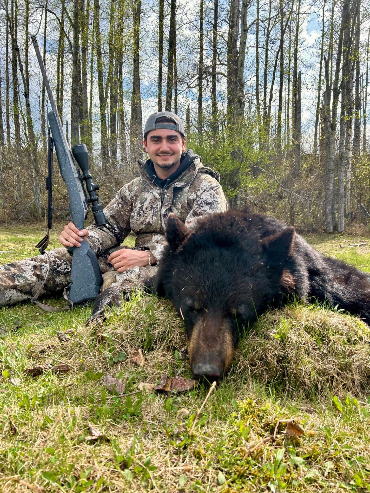

Hey, I’m Daniel
Daniel Kociuba.
A little of my life, a little of what I’m building. Find it all here.
I use arch btw
Find me online
Each link opens in a new tab ↗

Hey, I’m Daniel
A little of my life, a little of what I’m building. Find it all here.
I use arch btw
Each link opens in a new tab ↗